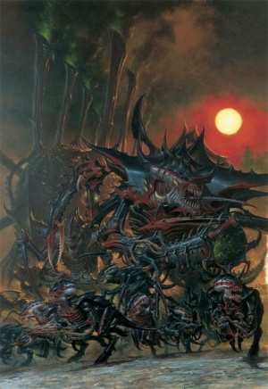
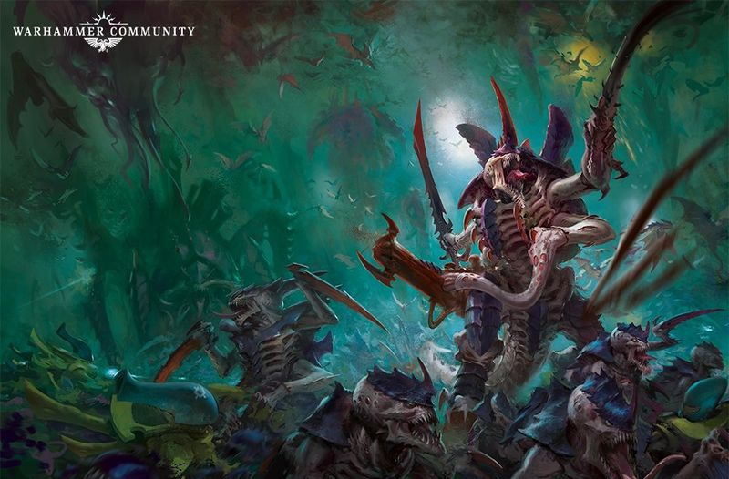
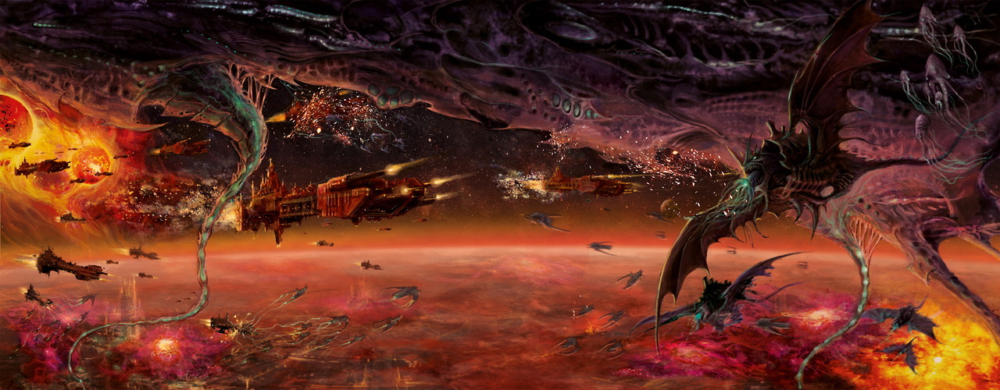

The Hive Fleet
The Tyranids, also known as The Great Devourer are an extragalactic alien race, whose sole purpose is the consumption of all forms of genetic and biological material in order to evolve and reproduce. Tyranid technology is based entirely on biological engineering. Every function is carried out by living, engineered creatures, each of which collectively forms the Hive Fleet, directed by a single Hive Mind.
The Tyranids are seen as one of the gravest threats to the entire Galaxy. They seek only to consume all organic life and cannot be reasoned with or deterred in this quest. Worse still for the Galaxy, thus far the Tyranid Hive Fleets that have been encountered are merely the furthest stretched tendril of the main invasion fleet that is still traveling in the void of space
There History
The exact origin of the Tyranids themselves is unclear, save the fact that they are not of The Galaxy and have only recently arrived here after traveling countless millennia in the intergalactic void. It is unknown which galaxy they originated from, or for how long the Tyranid race has been on its genocidal rampage, but it is believed that it is the Astronomican that is drawing the Tyranid Hive Fleet to threaten the galaxy. The Tyranids were first attracted to the Milky Way Galaxy when the xenos communication device known as the Pharos was overloaded in the Battle of Sotha during the Horus Heresy. Indeed their very name is but a title given to them by the Imperium, named after the planet where they were first encountered (Tyran). It is possible that they have been preying on other galaxies since time immemorial. According to another source, they have consumed one thousand galaxies and are responsible for the annihilation of millions of intelligent species.
The Imperium's first official contact with the Tyranid race was in 741.M41, when the Hive Fleet later known as Behemoth invaded the Eastern Fringe and annihilated planet Tyran. However, reexamination of Imperial records has led to speculation that the Tyranids have been invading, or at least probing, the Galaxy for much longer. Some of the Galaxy's most notorious predatory beasts, such as the Catachan Devil or the Fenrisian Kraken[8], are guessed to be the descendants of ancient Hive Fleets. Records kept by the Ordo Xenos of the Inquisition suggest contact with Tyranid bio-forms as early back as M35; even more remarkable, in 937.M41, a Bio-ship was discovered beneath the surface of Nusquam Fundumentibus, where it had lain dormant since around M34. This discovery raised the disquieting possibility that other dormant Hive units are already "salted" around the Imperium as a whole, waiting for a new Hive Fleet to awaken them.
Hive Fleet Behemoth was largely defeated at the Battle of Macragge in 745.M41. However this was hardly the end of the Tyranid menace. After Behemoth, the next major Hive Fleet to move into the Galaxy was Kraken in 992.M41, though tendrils of this Hive Fleet were defeated by the Imperium Ichar IV Campaign and by the Eldar at the Battle of Iyanden.. Despite these setbacks, the Tyranids continued to advance into the Galaxy through a variety of smaller Hive Fleets. In 997.M41 the largest Tyranid Hive Fleet encountered so far, Leviathan, moved into the galaxy below the galactic plain. However thanks to the formation of the Great Rift, much of Leviathan was cutoff as it made its main assault on Baal, homeworld of the Blood Angels. Most of Leviathan was destroyed during the period known as the Blackness against the defenders of Baal, the Indomitus Crusade, and newly materialized Daemonic armies.However the Hive Fleet still has many tendrils remaining, which are now surging towards Segmentum Solar.
An Imperial research body dubbed the Strategic Collective has determined that the Tyranid Fleets encountered so far are just the initial reconnaissance units for a far greater whole. Their report advised the Departmento Munitorum to increase mobilization and recruitment by a minimum of 500%. Such a number, if attempted, would mean the conscription of every man, woman, and child on every world of the Segmentums Solar, Obscurus, and Tempestus.
There Biology
The Tyranid forces are constantly changing and evolving at an unnatural speed. It is unlikely that all types of Tyranids have been seen by the Imperium, and still less likely that they will ever all be seen. However a few key traits are identical to nearly all Tyranids, such as tough chitinous armor, a hexapedal anatomy, and multiple redundant organs which make them incredibly difficult to kill.
Every weapon and projectile used by the hive fleets is a living organism, grown from the reconstituted biomatter of previous invasions. The Tyranids have no form of mechanical technology and, instead, harness an advanced form of biotechnology. These creatures live in a highly symbiotic fashion, fusing into each other’s flesh so that it is often impossible to say where one Tyranid creature ends, and another begins. This relationship is most obvious in the larger constructs, whose repurposed anatomies still retain recognizable biological shapes. However this "forced parasitism" exists at every level, with examples such as "thinking blood", organs that can live separately from the creature they served, and subsidiary brains that serve as a "backup" in case of primary brain death or contain some specialist knowledge necessary for the current invasion.[15] In this way, Tyranid warrior-beasts wield living weapons that are literally extensions of their own bodies, each one a killing machine, perfectly adapted to slaughter its victims. In addition, Tyranids are highly toxic to all forms of life, and many of their organisms expel toxic spores during invasions to make a world uninhabitable to non-Tyranid life.
The bio-construct nature of the Tyranids makes them a terrible foe to face, for their armies contain a creature specialized for every conceivable facet of warfare, which can be altered and regrown to suit a battle’s needs in a short span of time. Thus can a hive fleet adapt to generate a force capable of overwhelming any opposition, unleashing a vast throng of ferocious alien monsters that can fly, run, burrow and stalk through the defenses of any foe.
The Tyranids do not communicate with the other races of the galaxy. The Tyranids cannot be reasoned with, appeased or surrendered to. There can be no hope of mercy from such a foe. To face the Tyranids is simply a matter of survival: kill or be consumed.
The raw matter of Chaos offers no nourishment to Tyranids, and this is why the Hive Fleets normally avoid areas plagued by Warp Storms and Daemonic activity. This has become more difficult, as the impure essence of the Warp increasingly pours from the Great Rift and across the galaxy. This has caused vital resources to be denied to the Hive Fleets and Kronos appears to be the Hive Mind's solution to this problem.
